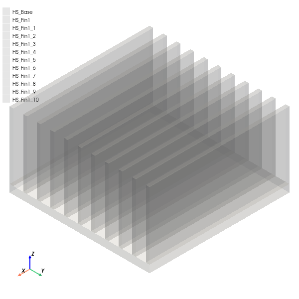
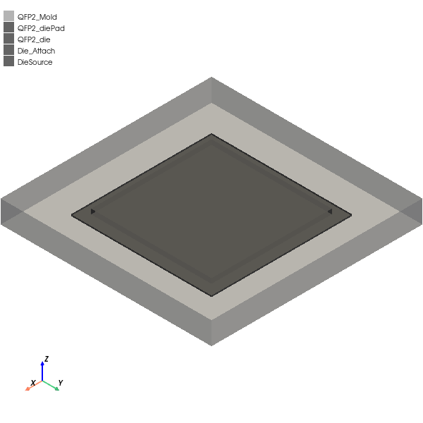
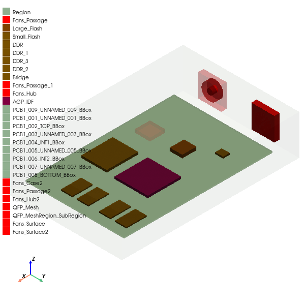
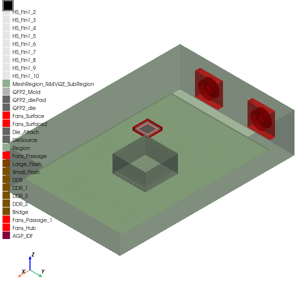

Download this example
Download this example as a Jupyter Notebook or as a Python script.
Thermal analysis with 3D components#
This example shows how to create a thermal analysis of an electronic package by taking advantage of 3D components with advanced features added by PyAEDT.
Keywords: Icepak, 3D components, mesh regions, monitor objects.
Perform imports and define constants#
Perform required imports.
[1]:
import os
import tempfile
import time
[2]:
from ansys.aedt.core import Icepak
from ansys.aedt.core.examples.downloads import download_icepak_3d_component
Define constants.
[3]:
AEDT_VERSION = "2025.1"
NG_MODE = False # Open AEDT UI when it is launched.
Create temporary directory and download files#
Create a temporary directory where downloaded data or dumped data can be stored. If you’d like to retrieve the project data for subsequent use, the temporary folder name is given by temp_folder.name.
[4]:
temp_folder = tempfile.TemporaryDirectory(suffix=".ansys")
package_temp_name, qfp_temp_name = download_icepak_3d_component(
local_path=temp_folder.name
)
Create heatsink#
Create an empty project in non-graphical mode.
[5]:
ipk = Icepak(
project=os.path.join(temp_folder.name, "Heatsink.aedt"),
version=AEDT_VERSION,
non_graphical=NG_MODE,
close_on_exit=True,
new_desktop=True,
)
PyAEDT INFO: Python version 3.10.11 (tags/v3.10.11:7d4cc5a, Apr 5 2023, 00:38:17) [MSC v.1929 64 bit (AMD64)].
PyAEDT INFO: PyAEDT version 0.18.dev0.
PyAEDT INFO: Initializing new Desktop session.
PyAEDT INFO: Log on console is enabled.
PyAEDT INFO: Log on file C:\Users\ansys\AppData\Local\Temp\pyaedt_ansys_7fe4d9bd-48be-4721-aec7-6b2da1c42b7d.log is enabled.
PyAEDT INFO: Log on AEDT is disabled.
PyAEDT INFO: Debug logger is disabled. PyAEDT methods will not be logged.
PyAEDT INFO: Launching PyAEDT with gRPC plugin.
PyAEDT INFO: New AEDT session is starting on gRPC port 50570.
PyAEDT INFO: Electronics Desktop started on gRPC port: 50570 after 6.664674997329712 seconds.
PyAEDT INFO: AEDT installation Path C:\Program Files\ANSYS Inc\v251\AnsysEM
PyAEDT INFO: Ansoft.ElectronicsDesktop.2025.1 version started with process ID 2572.
PyAEDT INFO: Project Heatsink has been created.
PyAEDT INFO: No design is present. Inserting a new design.
PyAEDT INFO: Added design 'Icepak_F1U' of type Icepak.
PyAEDT INFO: Aedt Objects correctly read
Remove the air region, which is present by default. An air region is not needed as the heatsink is to be exported as a 3D component.
[6]:
ipk.modeler["Region"].delete()
PyAEDT INFO: Modeler class has been initialized! Elapsed time: 0m 0sec
Define the heatsink using multiple boxes.
[7]:
hs_base = ipk.modeler.create_box(
origin=[0, 0, 0], sizes=[37.5, 37.5, 2], name="HS_Base"
)
hs_base.material_name = "Al-Extruded"
hs_fin = ipk.modeler.create_box(origin=[0, 0, 2], sizes=[37.5, 1, 18], name="HS_Fin1")
hs_fin.material_name = "Al-Extruded"
n_fins = 11
hs_fins = hs_fin.duplicate_along_line(vector=[0, 3.65, 0], clones=n_fins)
PyAEDT INFO: Materials class has been initialized! Elapsed time: 0m 0sec
[8]:
ipk.plot(show=False, output_file=os.path.join(temp_folder.name, "Heatsink.jpg"))
PyAEDT INFO: Parsing C:/Users/ansys/AppData/Local/Temp/tmpy0i3eeiw.ansys/Heatsink.aedt.
PyAEDT INFO: File C:/Users/ansys/AppData/Local/Temp/tmpy0i3eeiw.ansys/Heatsink.aedt correctly loaded. Elapsed time: 0m 0sec
PyAEDT INFO: aedt file load time 0.0
PyAEDT INFO: PostProcessor class has been initialized! Elapsed time: 0m 0sec
PyAEDT INFO: Post class has been initialized! Elapsed time: 0m 0sec
C:\actions-runner\_work\pyaedt-examples\pyaedt-examples\.venv\lib\site-packages\pyvista\jupyter\notebook.py:37: UserWarning: Failed to use notebook backend:
Please install `ipywidgets`.
Falling back to a static output.
warnings.warn(

[8]:
<ansys.aedt.core.visualization.plot.pyvista.ModelPlotter at 0x1af03fd8640>
Define a mesh region around the heatsink.
[9]:
mesh_region = ipk.mesh.assign_mesh_region(
assignment=[hs_base.name, hs_fin.name] + hs_fins
)
mesh_region.manual_settings = True
mesh_region.settings["MaxElementSizeX"] = "5mm"
mesh_region.settings["MaxElementSizeY"] = "5mm"
mesh_region.settings["MaxElementSizeZ"] = "1mm"
mesh_region.settings["MinElementsInGap"] = 4
mesh_region.settings["MaxLevels"] = 2
mesh_region.settings["BufferLayers"] = 2
mesh_region.settings["EnableMLM"] = True
mesh_region.settings["UniformMeshParametersType"] = "Average"
mesh_region.update()
PyAEDT WARNING: No mesh operation found.
PyAEDT WARNING: No mesh region found.
PyAEDT INFO: Mesh class has been initialized! Elapsed time: 0m 0sec
PyAEDT WARNING: Property Command is read-only.
PyAEDT WARNING: Property Command is read-only.
[9]:
True
Assign monitor objects.
[10]:
hs_middle_fin = ipk.modeler.get_object_from_name(assignment=hs_fins[n_fins // 2])
point_monitor_position = [
0.5 * (hs_base.bounding_box[i] + hs_base.bounding_box[i + 3]) for i in range(2)
] + [
hs_middle_fin.bounding_box[-1]
] # average x,y, top z
ipk.monitor.assign_point_monitor(
point_position=point_monitor_position,
monitor_quantity=["Temperature", "HeatFlux"],
monitor_name="TopPoint",
)
ipk.monitor.assign_face_monitor(
face_id=hs_base.bottom_face_z.id,
monitor_quantity="Temperature",
monitor_name="Bottom",
)
ipk.monitor.assign_point_monitor_in_object(
name=hs_middle_fin.name,
monitor_quantity="Temperature",
monitor_name="MiddleFinCenter",
)
[10]:
'MiddleFinCenter'
Export the heatsink 3D component to a "componentLibrary" folder. The auxiliary_dict parameter is set to True to export the monitor objects along with the A3DCOMP file.
[11]:
os.mkdir(os.path.join(temp_folder.name, "componentLibrary"))
ipk.modeler.create_3dcomponent(
input_file=os.path.join(temp_folder.name, "componentLibrary", "Heatsink.a3dcomp"),
name="Heatsink",
export_auxiliary=True,
)
ipk.close_project(save=False)
PyAEDT INFO: Python version 3.10.11 (tags/v3.10.11:7d4cc5a, Apr 5 2023, 00:38:17) [MSC v.1929 64 bit (AMD64)].
PyAEDT INFO: PyAEDT version 0.18.dev0.
PyAEDT INFO: Returning found Desktop session with PID 2572!
PyAEDT INFO: Project temp_proj has been created.
PyAEDT INFO: No design is present. Inserting a new design.
PyAEDT INFO: Added design 'Icepak_6UO' of type Icepak.
PyAEDT INFO: Aedt Objects correctly read
PyAEDT INFO: Parsing design objects. This operation can take time
PyAEDT INFO: Refreshing bodies from Object Info
PyAEDT INFO: Bodies Info Refreshed Elapsed time: 0m 0sec
PyAEDT INFO: 3D Modeler objects parsed. Elapsed time: 0m 0sec
PyAEDT INFO: Deleted 12 Objects: HS_Base,HS_Fin1_7,HS_Fin1_6,HS_Fin1_5,HS_Fin1_4,HS_Fin1_9,HS_Fin1_3,HS_Fin1_10,HS_Fin1_2,HS_Fin1_1,HS_Fin1,HS_Fin1_8.
PyAEDT INFO: Modeler class has been initialized! Elapsed time: 0m 0sec
PyAEDT INFO: Closing the AEDT Project temp_proj
PyAEDT INFO: Project temp_proj closed correctly
PyAEDT INFO: C:\Users\ansys\AppData\Local\Temp\tmpy0i3eeiw.ansys\Heatsink.pyaedt\Icepak_F1U\Icepak_F1U_CQ2636.json correctly created.
PyAEDT INFO: Json file C:\Users\ansys\AppData\Local\Temp\tmpy0i3eeiw.ansys\Heatsink.pyaedt\Icepak_F1U\Icepak_F1U_CQ2636.json created correctly.
PyAEDT INFO: Closing the AEDT Project Heatsink
PyAEDT INFO: Project Heatsink closed correctly
[11]:
True
Create QFP#
Open the previously downloaded project containing a QPF.
[12]:
ipk = Icepak(project=qfp_temp_name, version=AEDT_VERSION)
ipk.plot(show=False, output_file=os.path.join(temp_folder.name, "QFP2.jpg"))
PyAEDT INFO: Python version 3.10.11 (tags/v3.10.11:7d4cc5a, Apr 5 2023, 00:38:17) [MSC v.1929 64 bit (AMD64)].
PyAEDT INFO: Parsing C:\Users\ansys\AppData\Local\Temp\tmpy0i3eeiw.ansys\QFP2.aedt.
PyAEDT INFO: PyAEDT version 0.18.dev0.
PyAEDT INFO: Returning found Desktop session with PID 2572!
PyAEDT INFO: Project QFP2 has been opened.
PyAEDT INFO: File C:\Users\ansys\AppData\Local\Temp\tmpy0i3eeiw.ansys\QFP2.aedt correctly loaded. Elapsed time: 0m 7sec
PyAEDT INFO: Active Design set to QFP2_Model
PyAEDT INFO: Active Design set to QFP2_Model
PyAEDT INFO: Aedt Objects correctly read
PyAEDT INFO: PostProcessor class has been initialized! Elapsed time: 0m 0sec
PyAEDT INFO: Post class has been initialized! Elapsed time: 0m 0sec
PyAEDT INFO: Modeler class has been initialized! Elapsed time: 0m 0sec
C:\actions-runner\_work\pyaedt-examples\pyaedt-examples\.venv\lib\site-packages\pyvista\jupyter\notebook.py:37: UserWarning: Failed to use notebook backend:
Please install `ipywidgets`.
Falling back to a static output.
warnings.warn(

[12]:
<ansys.aedt.core.visualization.plot.pyvista.ModelPlotter at 0x1af02744520>
Create a dataset for power dissipation.
[13]:
x_datalist = [45, 53, 60, 70]
y_datalist = [0.5, 3, 6, 9]
ipk.create_dataset(
name="PowerDissipationDataset",
x=x_datalist,
y=y_datalist,
is_project_dataset=False,
x_unit="cel",
y_unit="W",
)
PyAEDT INFO: Dataset PowerDissipationDataset doesn't exist.
PyAEDT INFO: Dataset PowerDissipationDataset created successfully.
[13]:
<ansys.aedt.core.application.variables.DataSet at 0x1af18247910>
Assign a source power condition to the die.
[14]:
ipk.create_source_power(
face_id="DieSource",
thermal_dependent_dataset="PowerDissipationDataset",
source_name="DieSource",
)
PyAEDT INFO: Boundary SourceIcepak DieSource has been created.
[14]:
<ansys.aedt.core.modules.boundary.common.BoundaryObject at 0x1af18247a30>
Assign thickness to the die attach surface.
[15]:
ipk.assign_conducting_plate_with_thickness(
obj_plate="Die_Attach",
shell_conduction=True,
thickness="0.05mm",
solid_material="Epoxy Resin-Typical",
boundary_name="Die_Attach",
)
PyAEDT INFO: Boundary Conducting Plate Die_Attach has been created.
[15]:
<ansys.aedt.core.modules.boundary.common.BoundaryObject at 0x1af18246ef0>
Assign monitor objects.
[16]:
ipk.monitor.assign_point_monitor_in_object(
name="QFP2_die", monitor_quantity="Temperature", monitor_name="DieCenter"
)
ipk.monitor.assign_surface_monitor(
surface_name="Die_Attach", monitor_quantity="Temperature", monitor_name="DieAttach"
)
[16]:
'DieAttach'
Export the QFP 3D component in the "componentLibrary" folder and close the project. Here the auxiliary dictionary allows exporting not only the monitor objects but also the dataset used for the power source assignment.
[17]:
ipk.modeler.create_3dcomponent(
input_file=os.path.join(temp_folder.name, "componentLibrary", "QFP.a3dcomp"),
name="QFP",
export_auxiliary=True,
datasets=["PowerDissipationDataset"],
)
ipk.release_desktop(close_projects=False, close_desktop=False)
PyAEDT INFO: Mesh class has been initialized! Elapsed time: 0m 0sec
PyAEDT INFO: Python version 3.10.11 (tags/v3.10.11:7d4cc5a, Apr 5 2023, 00:38:17) [MSC v.1929 64 bit (AMD64)].
PyAEDT INFO: PyAEDT version 0.18.dev0.
PyAEDT INFO: Returning found Desktop session with PID 2572!
PyAEDT INFO: Project temp_proj has been created.
PyAEDT INFO: No design is present. Inserting a new design.
PyAEDT INFO: Added design 'Icepak_PO9' of type Icepak.
PyAEDT INFO: Aedt Objects correctly read
PyAEDT INFO: Parsing design objects. This operation can take time
PyAEDT INFO: Refreshing bodies from Object Info
PyAEDT INFO: Bodies Info Refreshed Elapsed time: 0m 0sec
PyAEDT INFO: 3D Modeler objects parsed. Elapsed time: 0m 0sec
PyAEDT INFO: Deleted 5 Objects: Die_Attach,QFP2_die,QFP2_diePad,QFP2_Mold,DieSource.
PyAEDT INFO: Modeler class has been initialized! Elapsed time: 0m 0sec
PyAEDT INFO: Closing the AEDT Project temp_proj
PyAEDT INFO: Project temp_proj closed correctly
PyAEDT INFO: C:\Users\ansys\AppData\Local\Temp\tmpy0i3eeiw.ansys\QFP2.pyaedt\QFP2_Model\QFP2_Model_U79VBP.json correctly created.
PyAEDT INFO: Json file C:\Users\ansys\AppData\Local\Temp\tmpy0i3eeiw.ansys\QFP2.pyaedt\QFP2_Model\QFP2_Model_U79VBP.json created correctly.
PyAEDT INFO: Desktop has been released and closed.
[17]:
True
Create complete electronic package#
Download and open a project containing the electronic package.
[18]:
ipk = Icepak(
project=package_temp_name,
version=AEDT_VERSION,
non_graphical=NG_MODE,
)
ipk.plot(
assignment=[o for o in ipk.modeler.object_names if not o.startswith("DomainBox")],
show=False,
output_file=os.path.join(temp_folder.name, "electronic_package_missing_obj.jpg"),
)
PyAEDT INFO: Parsing C:\Users\ansys\AppData\Local\Temp\tmpy0i3eeiw.ansys\PCBAssembly.aedt.
PyAEDT INFO: Python version 3.10.11 (tags/v3.10.11:7d4cc5a, Apr 5 2023, 00:38:17) [MSC v.1929 64 bit (AMD64)].
PyAEDT INFO: PyAEDT version 0.18.dev0.
PyAEDT INFO: Initializing new Desktop session.
PyAEDT INFO: Log on console is enabled.
PyAEDT INFO: Log on file C:\Users\ansys\AppData\Local\Temp\pyaedt_ansys_7fe4d9bd-48be-4721-aec7-6b2da1c42b7d.log is enabled.
PyAEDT INFO: Log on AEDT is disabled.
PyAEDT INFO: Debug logger is disabled. PyAEDT methods will not be logged.
PyAEDT INFO: Launching PyAEDT with gRPC plugin.
PyAEDT INFO: New AEDT session is starting on gRPC port 50668.
PyAEDT INFO: File C:\Users\ansys\AppData\Local\Temp\tmpy0i3eeiw.ansys\PCBAssembly.aedt correctly loaded. Elapsed time: 0m 0sec
PyAEDT INFO: Electronics Desktop started on gRPC port: 50668 after 6.597898244857788 seconds.
PyAEDT INFO: AEDT installation Path C:\Program Files\ANSYS Inc\v251\AnsysEM
PyAEDT INFO: Ansoft.ElectronicsDesktop.2025.1 version started with process ID 5196.
PyAEDT INFO: Project PCBAssembly has been opened.
PyAEDT INFO: Active Design set to Model
PyAEDT INFO: Active Design set to Model
PyAEDT INFO: Aedt Objects correctly read
PyAEDT INFO: Modeler class has been initialized! Elapsed time: 0m 0sec
PyAEDT INFO: PostProcessor class has been initialized! Elapsed time: 0m 0sec
PyAEDT INFO: Post class has been initialized! Elapsed time: 0m 0sec
C:\actions-runner\_work\pyaedt-examples\pyaedt-examples\.venv\lib\site-packages\pyvista\jupyter\notebook.py:37: UserWarning: Failed to use notebook backend:
Please install `ipywidgets`.
Falling back to a static output.
warnings.warn(

[18]:
<ansys.aedt.core.visualization.plot.pyvista.ModelPlotter at 0x1af18247460>
The heatsink and the QFP are missing. They can be inserted as 3D components. The auxiliary files are needed because the goal is to also import monitor objects and datasets.
Create a coordinate system for the heatsink so that it is placed on top of the AGP.
[19]:
agp = ipk.modeler.get_object_from_name(assignment="AGP_IDF")
cs = ipk.modeler.create_coordinate_system(
origin=[agp.bounding_box[0], agp.bounding_box[1], agp.bounding_box[-1]],
name="HeatsinkCS",
reference_cs="Global",
x_pointing=[1, 0, 0],
y_pointing=[0, 1, 0],
)
heatsink_obj = ipk.modeler.insert_3d_component(
input_file=os.path.join(temp_folder.name, "componentLibrary", "Heatsink.a3dcomp"),
coordinate_system="HeatsinkCS",
auxiliary_parameters=True,
)
QFP2_obj = ipk.modeler.insert_3d_component(
input_file=os.path.join(temp_folder.name, "componentLibrary", "QFP.a3dcomp"),
coordinate_system="Global",
auxiliary_parameters=True,
)
ipk.plot(
assignment=[o for o in ipk.modeler.object_names if not o.startswith("DomainBox")],
show=False,
plot_air_objects=False,
output_file=os.path.join(temp_folder.name, "electronic_package.jpg"),
force_opacity_value=0.5,
)
PyAEDT INFO: Python version 3.10.11 (tags/v3.10.11:7d4cc5a, Apr 5 2023, 00:38:17) [MSC v.1929 64 bit (AMD64)].
PyAEDT INFO: PyAEDT version 0.18.dev0.
PyAEDT INFO: Returning found Desktop session with PID 5196!
PyAEDT INFO: Project Project_MH7 has been created.
PyAEDT INFO: No design is present. Inserting a new design.
PyAEDT INFO: Added design 'Icepak_RHS' of type Icepak.
PyAEDT INFO: Aedt Objects correctly read
PyAEDT INFO: Closing the AEDT Project Project_MH7
PyAEDT INFO: Project Project_MH7 closed correctly
PyAEDT INFO: Dataset PowerDissipationDataset exists.
PyAEDT WARNING: Dataset PowerDissipationDataset already exists
PyAEDT INFO: Python version 3.10.11 (tags/v3.10.11:7d4cc5a, Apr 5 2023, 00:38:17) [MSC v.1929 64 bit (AMD64)].
PyAEDT INFO: PyAEDT version 0.18.dev0.
PyAEDT INFO: Returning found Desktop session with PID 5196!
PyAEDT INFO: Project Project_7TL has been created.
PyAEDT INFO: No design is present. Inserting a new design.
PyAEDT INFO: Added design 'Icepak_7M2' of type Icepak.
PyAEDT INFO: Aedt Objects correctly read
PyAEDT INFO: Closing the AEDT Project Project_7TL
PyAEDT INFO: Project Project_7TL closed correctly
C:\actions-runner\_work\pyaedt-examples\pyaedt-examples\.venv\lib\site-packages\pyvista\jupyter\notebook.py:37: UserWarning: Failed to use notebook backend:
Please install `ipywidgets`.
Falling back to a static output.
warnings.warn(

[19]:
<ansys.aedt.core.visualization.plot.pyvista.ModelPlotter at 0x1af17af72b0>
Create a coordinate system at the xmin, ymin, and zmin of the model.
[20]:
bounding_box = ipk.modeler.get_model_bounding_box()
cs_pcb_assembly = ipk.modeler.create_coordinate_system(
origin=[bounding_box[0], bounding_box[1], bounding_box[2]],
name="PCB_Assembly",
reference_cs="Global",
x_pointing=[1, 0, 0],
y_pointing=[0, 1, 0],
)
Export the entire assembly as a 3D component and close the project. First, the nested hierarchy must be flattened because nested 3D components are currently not supported. Subsequently, the whole package can be exported as a 3D component. The auxiliary dictionary is needed to export monitor objects, datasets, and native components.
[21]:
ipk.flatten_3d_components()
PyAEDT INFO: Python version 3.10.11 (tags/v3.10.11:7d4cc5a, Apr 5 2023, 00:38:17) [MSC v.1929 64 bit (AMD64)].
PyAEDT INFO: PyAEDT version 0.18.dev0.
PyAEDT INFO: Returning found Desktop session with PID 5196!
PyAEDT INFO: Project Heatsink set to active.
PyAEDT INFO: Active Design set to Heatsink
PyAEDT INFO: Aedt Objects correctly read
PyAEDT INFO: Modeler class has been initialized! Elapsed time: 0m 0sec
PyAEDT INFO: Closing the AEDT Project Heatsink
PyAEDT INFO: Project Heatsink closed correctly
PyAEDT INFO: Python version 3.10.11 (tags/v3.10.11:7d4cc5a, Apr 5 2023, 00:38:17) [MSC v.1929 64 bit (AMD64)].
PyAEDT INFO: PyAEDT version 0.18.dev0.
PyAEDT INFO: Returning found Desktop session with PID 5196!
PyAEDT INFO: Project Heatsink set to active.
PyAEDT INFO: Active Design set to Heatsink
PyAEDT INFO: Aedt Objects correctly read
PyAEDT INFO: Modeler class has been initialized! Elapsed time: 0m 0sec
PyAEDT INFO: Parsing design objects. This operation can take time
PyAEDT INFO: Refreshing bodies from Object Info
PyAEDT INFO: Bodies Info Refreshed Elapsed time: 0m 0sec
PyAEDT INFO: 3D Modeler objects parsed. Elapsed time: 0m 0sec
PyAEDT INFO: Parsing design objects. This operation can take time
PyAEDT INFO: Refreshing bodies from Object Info
PyAEDT INFO: Bodies Info Refreshed Elapsed time: 0m 0sec
PyAEDT INFO: 3D Modeler objects parsed. Elapsed time: 0m 0sec
PyAEDT INFO: Heatsink1_Bottom monitor object lost its assignment due to geometry modifications and has been deleted.
PyAEDT INFO: Heatsink1_MiddleFinCenter monitor object lost its assignment due to geometry modifications and has been deleted.
PyAEDT INFO: Heatsink1_Bottom monitor object restored
PyAEDT INFO: Heatsink1_MiddleFinCenter monitor object restored
PyAEDT INFO: Closing the AEDT Project Heatsink
PyAEDT INFO: Project Heatsink closed correctly
PyAEDT INFO: Python version 3.10.11 (tags/v3.10.11:7d4cc5a, Apr 5 2023, 00:38:17) [MSC v.1929 64 bit (AMD64)].
PyAEDT INFO: PyAEDT version 0.18.dev0.
PyAEDT INFO: Returning found Desktop session with PID 5196!
PyAEDT INFO: Project QFP set to active.
PyAEDT INFO: Active Design set to QFP
PyAEDT INFO: Aedt Objects correctly read
PyAEDT INFO: Modeler class has been initialized! Elapsed time: 0m 0sec
PyAEDT INFO: Closing the AEDT Project QFP
PyAEDT INFO: Project QFP closed correctly
PyAEDT INFO: Python version 3.10.11 (tags/v3.10.11:7d4cc5a, Apr 5 2023, 00:38:17) [MSC v.1929 64 bit (AMD64)].
PyAEDT INFO: PyAEDT version 0.18.dev0.
PyAEDT INFO: Returning found Desktop session with PID 5196!
PyAEDT INFO: Project QFP set to active.
PyAEDT INFO: Active Design set to QFP
PyAEDT INFO: Aedt Objects correctly read
PyAEDT INFO: Modeler class has been initialized! Elapsed time: 0m 0sec
PyAEDT INFO: Parsing design objects. This operation can take time
PyAEDT INFO: Refreshing bodies from Object Info
PyAEDT INFO: Bodies Info Refreshed Elapsed time: 0m 0sec
PyAEDT INFO: 3D Modeler objects parsed. Elapsed time: 0m 0sec
PyAEDT INFO: Parsing design objects. This operation can take time
PyAEDT INFO: Refreshing bodies from Object Info
PyAEDT INFO: Bodies Info Refreshed Elapsed time: 0m 0sec
PyAEDT INFO: 3D Modeler objects parsed. Elapsed time: 0m 0sec
PyAEDT INFO: QFP1_DieAttach monitor object lost its assignment due to geometry modifications and has been deleted.
PyAEDT INFO: QFP1_DieCenter monitor object lost its assignment due to geometry modifications and has been deleted.
PyAEDT INFO: QFP1_DieAttach monitor object restored
PyAEDT INFO: QFP1_DieCenter monitor object restored
PyAEDT INFO: Closing the AEDT Project QFP
PyAEDT INFO: Project QFP closed correctly
[21]:
True
Release AEDT#
[22]:
ipk.save_project()
ipk.release_desktop()
# Wait 3 seconds to allow AEDT to shut down before cleaning the temporary directory.
time.sleep(3)
PyAEDT INFO: Project PCBAssembly Saved correctly
PyAEDT INFO: Desktop has been released and closed.
Clean up#
All project files are saved in the folder temp_folder.name. If you’ve run this example as a Jupyter notebook, you can retrieve those project files. The following cell removes all temporary files, including the project folder.
[23]:
temp_folder.cleanup()
Download this example
Download this example as a Jupyter Notebook or as a Python script.